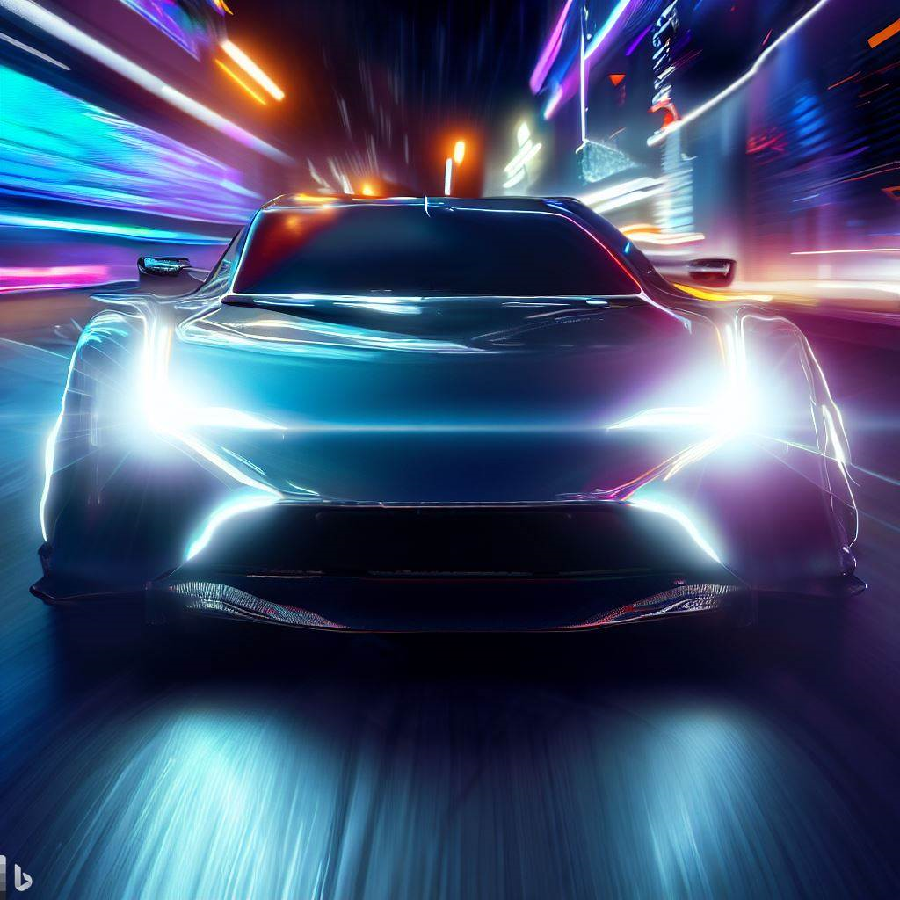
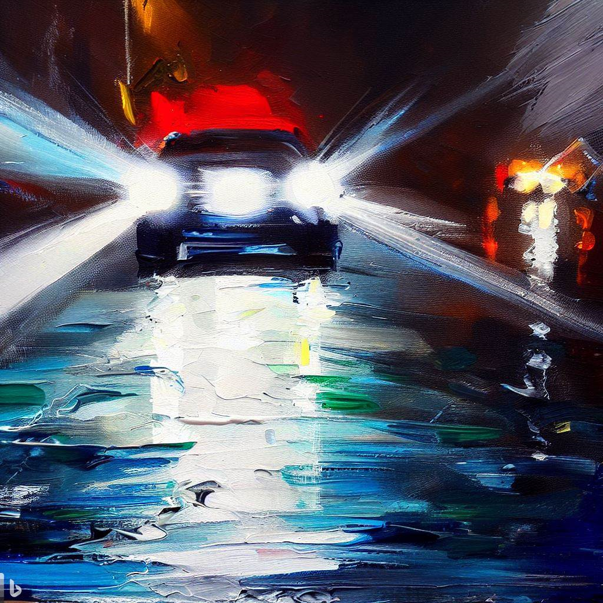
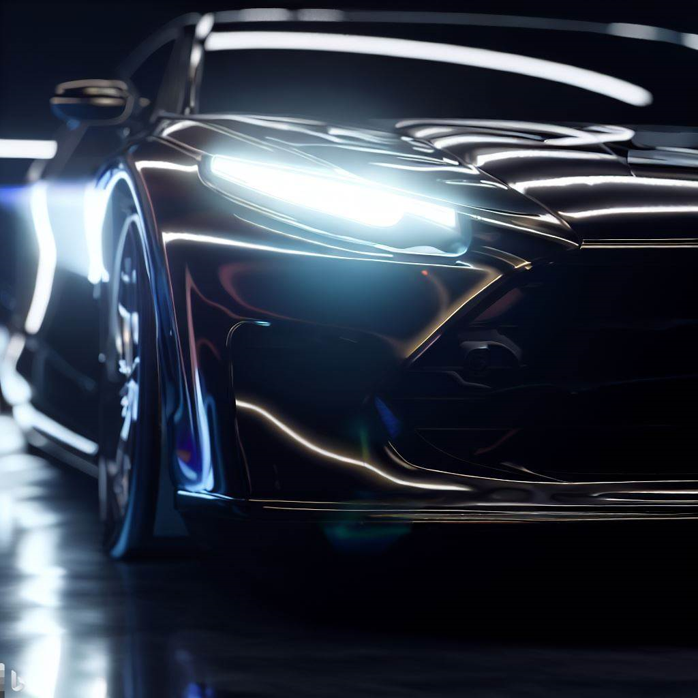

Understanding Headlights Glare at Night
Driving at night can be a daunting task, especially with the glare of headlights from oncoming vehicles. The dazzling brightness can blind your vision, causing you to lose your focus and even risk your safety. According to the National Highway Traffic Safety Administration (NHTSA), glare from headlights is one of the top causes of car accidents at night. So, how can you tackle the problem of headlights glare at night? In this article, we will discuss some tips and tricks to help you stay safe and drive comfortably even in the dark, to avoid glare from oncoming headlights.
What Causes Headlights Glare at Night?
One of the causes of headlights glare at night is the use of LEDs. LEDs have a much smaller luminous surface area compared to older car headlights, which makes them appear more glary (i.e., discomfort glare) to other drivers for the same luminous intensity. Although I should mention that the glare source size for indoor and outdoor lighting is widely accepted to impact discomfort glare, studies about the effect of glare source size of headlights on discomfort glare and disability glare show mixed results. These mixed results could be possibly explained by the various distances of the car to observer and the glare source non-uniformity, at large distances the headlights can appear as point sources, where the luminous glare source area might be less important than when observed at closer distances. Generally, within the lighting industry, it is agreed that the luminous glare source area does influence discomfort glare.
Headlights glare is caused by the intense and concentrated beam of light that comes from the headlights of oncoming cars. The glare is intensified when it reflects off wet surfaces, snow, and other reflective surfaces. The intensity and direction of the light beam are influenced by factors such as the angle and height of the headlights, the shape of the car, the luminous area, and the overall design of the headlights. Other factors such as the light spectrum, glare angle, the impact of glare sources in foveal view, age or chronotype of the observer, local and global adaptation are also found important in determining the amount of discomfort glare experienced.
Currently, standards and regulations are lagging behind with this trend of LED headlights, they only consider the luminous intensity when limiting headlight glare. They focus mostly on disability glare and not discomfort glare; two different concepts but both important. Disability glare is glare that impairs the vision of objects without necessarily causing discomfort. Discomfort glare is glare that causes discomfort without necessarily impairing the vision of objects. In current standards, different factors such as the luminous area are not taken into account, which means that for example headlights with a smaller luminous surface area but the same luminous intensity are still allowed. This highlights the need for more comprehensive regulations that take into account all factors influencing both discomfort and disability glare, and ideally focus on a generic visual system based model, to reduce both discomfort and disability glare from headlights and improve road safety for everyone.
Another reason for headlights glare at night is misaligned headlights. When the headlights are not aligned properly, they can scatter the light in different directions, causing discomfort and blinding the vision of other drivers. Poorly maintained headlights, such as dirty or foggy lenses, can also worsen the glare and reduce the effectiveness of the lights. Lastly, oncoming traffic with high beams on can also cause blinding glare, especially if the driver forgets to dim the lights in time.
The Effects of Headlights Glare at Night
The effects of headlights glare at night can be quite severe and pose a significant risk to drivers on the road. One of the most immediate effects of glare is temporary blindness or loss of vision, which can last for several seconds and significantly impair a driver's ability to see the road ahead. Additionally, prolonged exposure to glare can cause discomfort or pain in the eyes, which can be distracting and reduce a driver's focus and attention.
Glare can also have an impact on a driver's reaction time, as the sudden brightness can cause a delay in processing visual information and making decisions. Furthermore, it can be challenging to judge distances and speed accurately, especially when the glare obscures important details like road signs or other vehicles. This can increase the risk of accidents, particularly in situations where a driver needs to make a quick maneuver or react to a sudden hazard.
Overall, the effects of headlights glare at night are not only uncomfortable but also dangerous. It is essential for drivers to take steps to minimize glare and ensure that they can see the road ahead clearly and safely.
Tips and Tricks to Reduce Headlights Glare at Night
Adjust Your Mirrors
One of the simplest and most effective ways to reduce the impact of headlights glare at night is by adjusting your mirrors. Properly angled mirrors can significantly reduce the amount of light that enters your eyes, making it easier to see the road ahead.
Here are some tips on how to adjust your mirrors to minimize glare:
• Rearview mirror: Tilt it upwards slightly to avoid the headlights glare from the vehicles behind you. This will help to redirect the light towards the road instead of your eyes.
• Side mirrors: Angle them slightly downwards to avoid the glare from the cars approaching you from the sides. This will ensure that the light is directed towards the road rather than directly into your eyes.
By adjusting your mirrors properly, you can create a more comfortable and safer driving experience, particularly when driving at night or in low-light conditions. It's a small change that can make a big difference in your ability to see the road ahead and react to hazards quickly and effectively. Also increasing the glare source angle by looking in the opposite direction of the glary headlights can help reduce discomfort and disability glare.
Clean Your Windshield and Mirrors
A dirty windshield and mirrors can worsen the effects of headlights glare at night. Dirt, grime, and other debris on the glass can scatter and refract light, causing more glare and reducing your ability to see the road ahead clearly.
To prevent this from happening, it's essential to clean your windshield and mirrors regularly. Here are some tips to help you keep your glass surfaces clean and clear:
• Use a high-quality glass cleaner: Choose a cleaning solution that is designed for use on glass surfaces, and avoid using harsh chemicals or abrasive materials that could damage the glass or leave streaks.
• Use a microfiber cloth: Microfiber cloths are soft and gentle on glass surfaces, making them ideal for cleaning windshields and mirrors. They also absorb moisture and dirt effectively, leaving the glass surface clean and clear.
• Check for any obstructions: Before you clean your windshield and mirrors, check for any obstructions that could be contributing to glare, such as stickers or other objects on the glass. Removing these obstructions can help to reduce glare and improve your visibility.
By cleaning your windshield and mirrors regularly, you can ensure that your vision is clear and unobstructed, even in low-light conditions. This can help to reduce the impact of headlights glare at night and improve your overall safety on the road.
Dim Your Dashboard Lights
In addition to adjusting your mirrors and cleaning your windshield and mirrors, another effective way to improve visibility is by dimming your dashboard lights. The brightness of your dashboard lights can create a contrast between the dashboard and the road ahead, making it harder to see the road clearly. Although improving visibility it will most likely not help with encountering glare from headlights.
Here are some tips for dimming your dashboard lights to improve visibility:
• Locate the brightness control: Most cars have a brightness control for the dashboard lights. This is typically located near the dashboard or steering wheel.
• Adjust the brightness level: Use the brightness control to adjust the level of the dashboard lights. Lowering the brightness can reduce the contrast between the dashboard and the road ahead, making it easier to see the road clearly.
• Avoid using bright accessories: Bright accessories like phone screens or GPS devices can also contribute to glare at night. Try to avoid using these accessories or lower their brightness to reduce their impact.
By dimming your dashboard lights, you can reduce the contrast between the dashboard and the road ahead, making it easier to see and react to hazards on the road. This, in turn, can help to reduce the impact of headlights glare at night and improve your overall safety while driving.
Use Your High Beams Wisely
High beams can be very helpful while driving at night, as they can provide a wider and brighter view of the road. However, they can also be a major source of headlights glare for other drivers, causing temporary blindness and increased risk of accidents. Therefore, it's important to use your high beams wisely and follow these tips:
• Use high beams only when necessary: High beams should be used only in low-light conditions when there are no other vehicles around. When you approach other vehicles, switch to low beams to avoid blinding their drivers.
• Dim your high beams when you see an oncoming vehicle: When you see an oncoming vehicle, dim your high beams to avoid causing glare for the other driver. If the oncoming vehicle doesn't dim their high beams, look away and focus on the right side of the road until they pass.
• Don't use high beams in foggy conditions: High beams can reflect off fog and create a blinding glare that reduces visibility even further. In foggy conditions, use low beams or fog lights to avoid causing glare for other drivers.
By using your high beams wisely, you can reduce the impact of headlights glare on other drivers and make the road safer for everyone.
Keep a Safe Distance
Maintaining a safe distance from the vehicle in front of you is a crucial safety measure while driving, especially at night. It can give you more time to react to any sudden changes or obstacles on the road and help you avoid accidents. Additionally, it can also reduce the impact of headlights glare from the vehicle in front of you. Here are some tips to keep a safe distance:
• Follow the 3-second rule: To maintain a safe distance, you should follow the 3-second rule. Choose a stationary object on the road, and when the vehicle in front of you passes it, count three seconds. If you reach the object before the count of three, you're too close and need to slow down.
• Increase the distance in bad weather: In bad weather conditions, such as rain or snow, it's important to increase the distance between your vehicle and the one in front of you. This will give you more time to react to any sudden changes and avoid collisions.
• Don't tailgate: Tailgating, or driving too close to the vehicle in front of you, is not only dangerous but can also worsen the glare from their headlights. Keep a safe distance, and if the driver behind you is tailgating, safely move to the right lane and let them pass.
By keeping a safe distance from the vehicle in front of you, you can reduce the impact of their headlights glare and make the road safer for everyone.
Work towards technological solutions
To address the issue of headlights glare at night, researchers and engineers are working towards technological solutions. One such solution is the development of adaptive driving beam (ADB) headlights. ADB headlights use sensors to detect other vehicles and automatically adjust the intensity and direction of the beams to avoid causing glare for other drivers while still providing adequate visibility for the driver.
Another technological solution is the use of glare-free high beams, which use cameras and software to selectively dim sections of the high beam that would otherwise cause glare for other drivers. This allows the driver to benefit from improved visibility while minimizing the risk of blinding other drivers on the road.
Furthermore, advancements in LED technology are also being made to reduce glare from headlights. New designs should focus on all factors influencing both discomfort and disability glare.
In conclusion, technological advancements offer promising solutions to address the issue of headlights glare at night. With ongoing research and development, we can look forward to a safer and more comfortable driving experience for all.
Advocacy and policy solutions
Another approach to reducing the impact of headlights glare at night is through advocacy and policy solutions. This involves working with policymakers and government agencies to create and enforce regulations and guidelines that address the issue.
One potential solution is to revise the current standards and regulations for headlights glare. As mentioned earlier, the current standards only consider the intensity of the light, which does not account for the size of the luminous area and other factors.
Advocacy groups can also play a role in raising awareness about the dangers of headlights glare at night and the need for solutions. By organizing campaigns, petitions, and other forms of activism, these groups can push for change and hold policymakers accountable.
Ultimately, a combination of technological, advocacy, and policy solutions will be needed to address the issue of headlights glare at night. By working together and implementing a multi-faceted approach, we can create safer and more comfortable driving conditions for everyone.
FAQs
- Can headlights glare cause permanent eye damage?
- Can advanced headlight technologies be retrofitted on older cars?
- Can adjusting the angle and height of my headlights affect their performance?
- Can polarized sunglasses reduce the glare from headlights at night?
• No, headlights glare can cause temporary blindness, eye strain, headaches, and fatigue, but it does not cause permanent eye damage.
• Some advanced headlight technologies, such as adaptive headlights, can be retrofitted on older cars, but it depends on the specific make and model.
• Yes, adjusting the angle and height of your headlights can affect their performance, and it is recommended to consult a professional before making any modifications.
• No, polarized sunglasses can actually make it worse by distorting your vision.
This text was written with help of ChatGPT and the figures were generated using Midjourney.
If you're interested in learning more about this research, feel free to reach out!
Rik Spieringhs